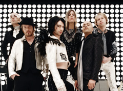
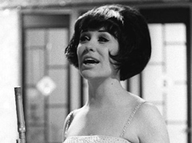
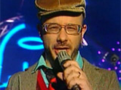
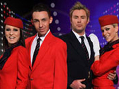
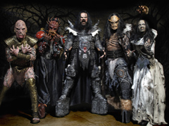

| 15.4. | Apocalyptica esiintyy Eurovision laulukilpailussa |
| Kolmen sellon bändi, kansainväliseen maineeseen noussut suomalainen Apocalyptica esiintyy Eurovision laulukilpailun 2007 finaalissa. Eicca Toppinen on sovittanut yhtyeen aiemmasta ja aivan uudesta, tulevasta materiaalista kokonaisuuden, joka on osa finaalin väliaikanumeroa. Yhtyeessä soittavat Eicca Toppisen lisäksi Paavo Lotjonen ja Perttu Kivilaakso sekä rumpali Mikko Sirén. | |
| 14.4. | Ruotsi ja Sveitsi vedonlyönnin alkuvaiheen ykkössuosikit |
|  Vedonlyönnin Euroviisujen tiimoilta on aloittanut tähän mennessä kahdeksan kansainvälistä vedonlyöntitoimistoa. Varmuudella finaalissa olevista maista vedonlyöjät uskovat eniten Ruotsia edustavan The Ark -yhtyeen kappaleen The Worrying Kind mahdollisuuksiin. Toiseksi suosituin finalisti on Venäjää edustava Serebro-tyttökolmikko. Semifinaaliin osallistuvista maista Sveitsin edustuskappale DJ Bobon Vampires are alive on vedonlyöjien ykkössuosikki. Valko-Venäjää edustavan Koldunin Work your magic ja Bulgarian edustuskappale Water ovat kuitenkin tiiviissä tuntumassa Sveitsiin. | |
| 13.4. | Euroviisujen kunniaksi julkaistaan kolme kokoelmalevyä |
|  Warner Music Finland julkaisee huhtikuun alussa kolme euroviisukokoelmaa Suomen tänä vuonna isännöimän Eurovision laulukilpailun kunniaksi. Pari vuotta sitten julkaistujen kokoelmien lisäksi nyt ilmestyy uutuutena Suomen finaaliklassikot tupla-CD, jolle on koottu vuosien varrella Suomen viisukilpailuista karsiutuneita, mutta sittemmin suureen suosioon nousseita lauluja. Albumin ensimmäinen levy kattaa vuodet 1962-1978, ja siltä ajalta kansakunnan musiikilliseen muistiin ovat jättäneet jälkensä mm. Tamara Lundin "Olen mikä olen", Lasse Mårtensonin "Kaikessa soi blues", Katri Helenan "Minne tuuli kuljettaa", Aarno Ranisen "On hetki", Markku Aron "Anna kaikkien kukkien kukkia" ja Laila Kinnusen "Muistojen bulevardi". Toisen cd:n aloittavan, Anneli Saariston vuoden 1978 kilpailukappaleen "Sinun kanssasi sinua ilman" ja Johanna Kurkelan tämän vuoden karsinnoissa esittämän herkän "Olet uneni kaunein" -balladin välillä viisukarsinnoissa on kilpaillut monta ikivihreäksi kohonnutta kappaletta. Riki Sorsan "Haaveissa vainko oot mun", Kim Lönnholmin "Minä olen muistanut",Arja Korisevan "Enkelin silmin", Samuli Edelmannin "Peggy", Ultra Bran "Tyttöjen välisestä ystävyydestä", Nightwishin "Sleepwalker" ja Annika Eklundin "Shanghain valot" ovat hyviä esimerkkejä hiteistä, jotka kuultiin alunperin nimenomaan Suomen euroviisukarsinnoissa. Toissa vuonna ilmestynyt Suomen euroviisut 1961-2006 -levyä on täydennetty Lordin historiallisella voittokappaleella. Samoin vuodelta 2005 peräisin oleva Käännetyt viisuhelmet -tupla julkaistaan nyt uudelleen. | |
| 12.4. | Israel saa osallistua Euroviisuihin |
|  Israel saa pitää Euroviisu-kappaleensa ennallaan. Euroopan yleisradioliitto EBU päätti viikon alussa, ettei "Push the button" -kappaleen sanoja tarvitse muuttaa. Liitto ilmoitti keskiviikkona pitämässään tiedotustilaisuudessa, että kaikki Euroviisuihin ehdolla olleet kappaleet on hyväksytty toukokuussa Helsingissä järjestettävään kilpailuun. EBU:n Euroviisu-organisaation vastaava tuottaja Svante Stockselius sanoo, ettei liitto halua kommentoida yksittäisiä edustuskappaleita. Hänen mukaansa on kuitenkin selvää, että parista kisaan ehdolla olleesta kappaleesta käytiin keskustelua ennen niiden hyväksymistä. Israelin yleisradio IBA on puolustanut maata Euroviisuissa edustavaa Teapacks-yhtyettä. Kappale ei IBA:n mukaan ole provokaatio vaan ennemminkin rauhan ele, joka ilmentää väkivallan pelkoa ja toivoa maailmanlaajuisesta rauhasta. | |
| 11.4. | Kaaos Britannian euroviisukarsinnassa |
|  Lauantai-iltana käydyssä Britannian euroviisukarsinnassa oli mukana kaikkiaan kuusi kappaletta, joista voittaja valittiin kaksivaiheisessa puhelin- ja tekstiviestiäänestyksessä. Ensimmäisen kierroksen kaksi parasta eteni ratkaisevalle toiselle kierrokselle. Karsinnan juontanut BBC:n monikymmenvuotinen euroviisukommentaattori Sir Terry Wogan julisti ensin kilpailun voittajaksi toisen superfinalistin Cindyn. Siinä vaiheessa illan toinen juontaja Fearne Cotton huomasi juontajaparinsa erheen ja julisti voittajaksi Scooch-yhtyeen. Lentoemäntinä ja stuertteina lavalla hääränneen Scooch-yhtyeen reipas tanssipop-kappale on nimeltään Flying The Flag (For You). Sen sävellyksestä ja sanoituksesta vastaavat Russ Spencer, Morten Schjolin, Andrew Hill ja Paul Tarry. Scooch oli suosionsa huipulla 1990-luvun lopulla, mutta yhtye hajosi vuosituhannen alkupuolella. Ryhmä kasattiin uudestaan tämänvuotisia Euroviisuja varten. | |
| 10.4. | Lordi esiintyy Eurovision laulukilpailun 2007 finaalissa |
|  Lordi esiintyy Eurovision laulukilpailun 2007 finaalissa. Eurovision laulukilpailussa on totuttu näkemään edellisvuoden vuoden voittaja, ja näin tapahtuu myös Helsingissä toukokuussa. Eurovision laulukilpailun 2007 teema on True Fantasy. Semifinaalin avaus- ja väliaikanumero tulevat painottumaan sanalle true, kun taas finaalin avaus- ja väliaikanumero nojautuvat enemmän sanaan fantasy. Lordista voi sanoa, että se toteutti suomalaisten haaveen ja kisat Suomeen tuoneena voittajana se on itseoikeutetusti finaalissa. Semifinaalin (10.5.) ja finaalin (12.5.) ohjelmat poikkeavat toisistaan, lukuun ottamatta tietysti niiden kymmenen artistin tai artistiryhmän esitystä, jotka jatkavat semifinaalista finaaliin. Juontajina molemmissa show:ssa nähdään Jaana Pelkonen ja Mikko Leppilampi. | |